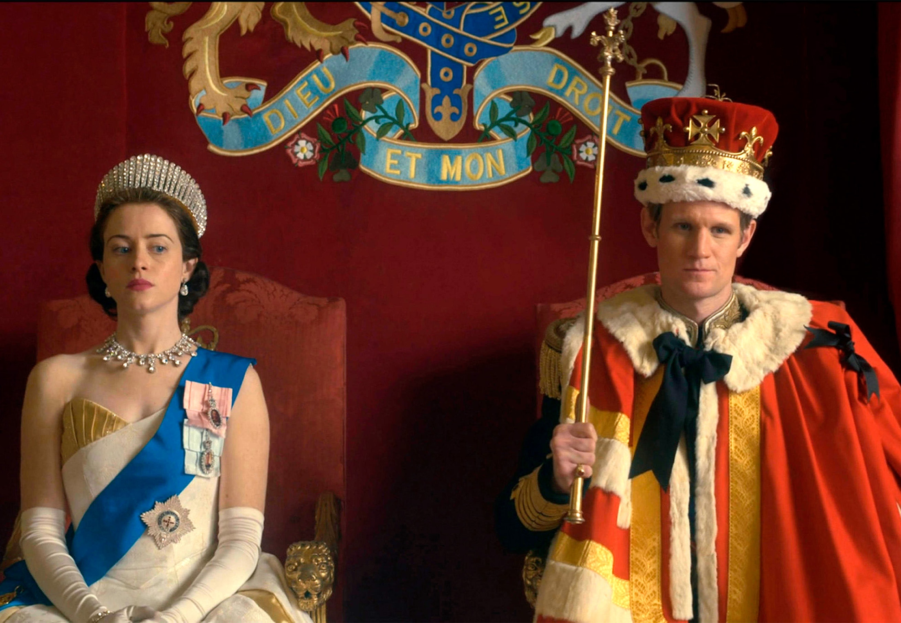

Netflix' suksessserie om det britiske kongehuset er
eminent fortalt og feiende flott å se på. Men til tider
er forholdet til fakta en smule lemfeldig.
"Hva er formålet med monarkiet? Bøyer kronen seg for folkets vilje? Eller skal den forbli hevet over tidens forandringer?"
Det spørsmåølet stiller den britiske statsministeren, Winston Churchill, den nykronede dronningen Elizabeth 2. noen få episoder
ut i Netflix' prisvinnende serie "The Crown". Året er 1952, og den unge dronningen har akkurat satt seg på tronen som Storbritannias
monark etter faren Georg. 6.s død.
Elizabeth svarer ikke, men Churchills
spørsmål gir gjenlyd gjennom hele "The Crown", som innbyr til en interessant debatt om monarkiets rolle i det moderne samfunnet.
I knappe sytti år har den i dag 95 år gamle dronning Elizabeth sittet på tronen. Hun har gjennomlevd det britiske imperiets storhetstid
og fall, den kalde krigen, ungdomsopprøret og statsminister Margaret Thatchers polariserende regjeringsperiode fra 1979 til 1990. Det er
disse historiske elementene som utgjør bakteppet for fortellingen om intriger og makt-kamper i den britiske kongefamilien. Fortellermessig
er det et sterkt grep å gjen-
gi historien sett gjennom kongehusets øyne, men det får også sitt å si for troverdigheten. Det britiske
kongehuset er beryktet for å være særdeles lite åpne om hverdagen på Buckingham Palace, og "The Crown" er derfor fylt med antagelser, kreative
friheter og oppdiktede samtaler mellom de kongelige hovedpersonene. Og denne blandingen av fiksjon og fakta har skapt enorm debatt i
Storbritannia.
I forbindelse med premieren på fjerde sesong, som skildrer forholdet mellom kronprins Charles og prinsesse Diana, sa den
konservative kulturministeren Oliver Dowden:
"Jeg er redd seere som ikke har opplevd disse begivenhetene, ikke vil kunne se forskjell
på fiksjon og fakta."
Kongefamilien har ikke kritisert "The Crown" offentlig, men kilder i konge-